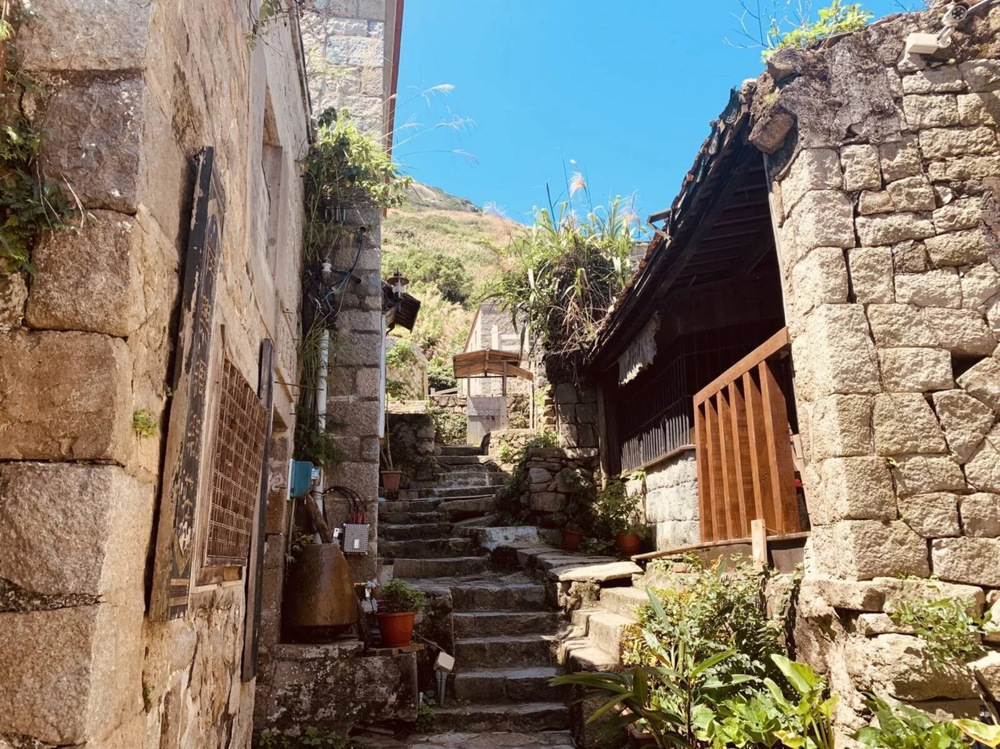
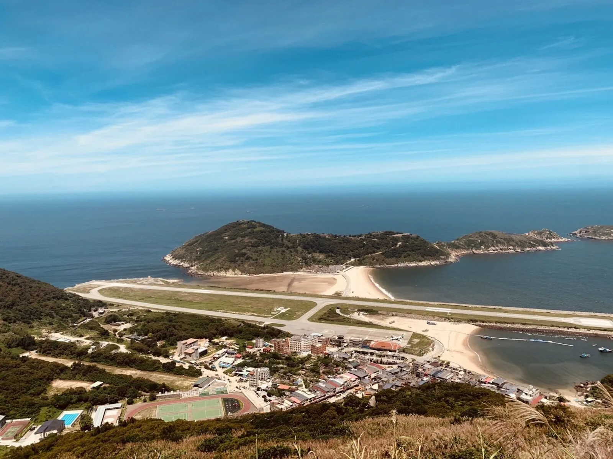

ABOUT
關於龍福旅行社
一家在北竿的旅行社。民國 93 年成立，比集團其他公司都早。
我們是誰
從北竿塘歧出發的在地旅行社
龍福旅行社有限公司於民國 93 年 2 月 9 日核准設立，登記地址在連江縣北竿鄉塘歧村 227 號 1 樓。我們規劃馬祖四鄉五島的團體行程、機加酒自由行，承接學校、社區大學、公司與研討會的包團，也為本島旅行社提供馬祖地接。
之後陸續成立的龍福山莊、龍福遊覽車、龍福開發，讓我們在島上有自己的住宿、車輛與餐廳。客人從機場出來到上飛機回家，中間的每一段都由集團自己的人接手。
台北與南竿各有聯絡電話。北竿的辦公室就在塘歧，離北竿機場步行可達。

沿革
集團怎麼一步步長出來
- 龍福旅行社有限公司 核准設立。集團最早成立的公司。
- 龍福山莊 旅館業核准設立，連江縣旅館 001 號。
- 龍福山莊股份有限公司 法人設立。
- 龍福遊覽車有限公司 核准設立，負責島內接駁與行程用車。
- 龍福山莊餐廳連續兩年獲交通部觀光局「臺灣團餐特色餐廳」。
- 龍福開發股份有限公司 核准設立。
- 龍福山莊完成增建，換發登記證，客房 70 間。
- 龍福旅行社提出旅行業環保標章申請。
法人資訊
龍福旅行社有限公司
- 法人名稱
- 龍福旅行社有限公司
- 統一編號
- 80646474
- 核准設立
- 民國 93 年 2 月 9 日
- 資本總額
- 新臺幣 6,000,000 元
- 代表人
- 王樹欽
- 登記地址
- 連江縣北竿鄉塘歧村 227 號 1 樓
- 旅行業註冊
- 交觀甲第 6701 號（甲種旅行業）待核對
- 品保協會
- 品保馬 0003待核對
- 聯絡電話
- 台北 02-2716-9600｜南竿 0836-22300
以上依經濟部商工登記公示資料。旅行業執照與品保會籍可至交通部觀光署旅行業查詢系統核對。
集團架構
龍福集團關係企業
五家公司代表人皆為王樹欽，所在地皆在北竿鄉。旅行社負責行程與契約，其他公司各管一段。
| 公司 | 統一編號 | 核准設立 | 在旅程中負責什麼 |
|---|---|---|---|
| 龍福旅行社有限公司 | 80646474 | 民國 93 年 2 月 9 日 | 行程規劃、契約、機票與船票、導遊、旅遊責任保險 |
| 龍福山莊股份有限公司 | 53026423 | 民國 101 年 3 月 1 日 | 住宿 70 間客房、海鮮痛風餐、藍眼淚葡萄酒；旅館業於民國 94 年核准設立 |
| 龍福遊覽車有限公司 | 53669662 | 民國 102 年 4 月 24 日 | 島內接駁、行程用車、行李托運 |
| 龍福開發股份有限公司 | 51166518 | 民國 105 年 11 月 18 日 | 待補 |
| 亞特森林咖啡坊股份有限公司 | 56603833 | 民國 106 年 3 月 24 日 | 待補 |
我們怎麼做
三件事，別家旅行社要靠外包，我們自己做
車
龍福遊覽車有限公司的車隊負責南北竿全程接駁。行程順序視天候與船班調整時，車在自己手上才調得動。
住與餐
龍福山莊在北竿塘岐，離機場步行可達。海鮮痛風餐配藍眼淚葡萄酒在這裡出菜，餐廳曾連續兩年獲觀光局「臺灣團餐特色餐廳」。
藍眼淚
入住龍福山莊的貴賓，季節內安排夜航出海追藍眼淚，海象不佳改岸邊尋淚。藍眼淚是自然現象，我們不保證看到，但會帶你到對的時間與地方。
環保作為
把旅行社的日常做得省一點
民國 113 年，龍福旅行社依交通部觀光署「旅行業環保標章」規範提出申請。申請項目包括辦公區域垃圾分類與資源回收、冷氣設備定期保養檢核、無人區域燈具關閉等作業措施。核發結果以主管機關公告為準。
龍福山莊的節能與永續作為另見山莊官網。
聯絡我們